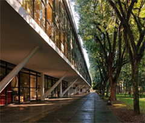

Teatro municipal de são paulo
Localizado na Rua Huet , 407 - Ipiranga, São Paulo,
O Aquário de São Paulo é um oceanário localizado no distrito do Ipiranga, zona sudeste da cidade de São Paulo, São Paulo, Brasil.
Inaugurado no dia 6 de julho de 2006 (11 anos), o complexo passou por uma reforma, tendo 2.000 m² antigamente, mas passando a possuir 8.000 m² de área construída. É o maior oceanário da América do Sul, contando com mais de 1 milhão de litros de água do mar.